2 Linux系统高级¶
1. Linux用户与权限¶
1.1 文件权限概述¶
Linux操作系统是多任务多用户操作系统，每当我们使用用户名登录操作系统时，Linux都会对该用户进行认证、授权审计等操作。操作系统为了识别每个用户，会给每个用户定义一个ID，就是UID。为了方便用户管理，Linux允许把多个用户放入一个用户组；在Linux系统中，用户组也有一个ID，GID。

在Linux操作系统中，root的权限是最高的，相当于windows的administrator，拥有最高权限，能执行任何命令和操作，而其他用户都是普通用户。
Linux对文件创建者（所属用户），所属用户组，其他用户都赋予不同的权限。
查看文件权限
# ls -l 或者 # ll

文件权限解读


r: 对文件是指可读取内容， 对目录是可以读，代表查看目录下的文件信息 => ls命令
w: 对文件是指可修改文件内容，对目录是指可以在其中创建或删除子节点(目录或文件)
x: 对文件是指是否可以运行这个文件，对目录是指是否可以cd进入这个目录
以上权限都只能针对普通用户，root超级管理员不受权限的控制，root可以为所欲为
1.2. 终端命令：组管理¶
本质: 给 同一类型用户 分配权限
| 命令 | 作用 |
|---|---|
| groupadd 组名 | 添加组 |
| groupdel 组名 | 删除组 |
| cat /etc/group | 确认组信息 |
| chgrp 组名 文件/目录名 | 修改文件/目录的所属组 —R递归 |
提示：
- 组信息保存在 /etc/group文件中
我们以root:x:0:root,itcast 为例： 用户组root，x是占位符，GID是0,root用户组下包括root、itcast。
在实际应用中, 可以预先针对 组 设置好权限, 然后 将不同的用户添加到对应的组中 , 从而 不用依次为每一个用户设置权限
演练目标：
1、在 指定目录下创建 python目录
2、新建dev组
3、将python目录的组修改为 dev
# chgrp dev python
1.3. 终端命令：用户管理¶
1.3.1 创建用户 、 设置密码 、删除用户¶
| 命令 | 作用 | 说明 |
|---|---|---|
| useradd -m -g 组 新建用户名 | 添加新用户 | -m自动建立用户家目录-g指定用户所在的组, 否则会建立一个和同名的组 |
| passwd 用户名 | 设置用户密码 | 如果是普通用户,直接用 passwd可以修改自己的账号密码 |
| userdel -r 用户名 | 删除用户 | -r选项会自动删除用户家目录 |
| cat /etc/passwd | grep 用户名 | 确认用户信息 |
提示:
- 创建用户时, 默认会创建一个和 用户名 同名的 组名
- 用户信息保存在 /etc/passwd 文件中
/etc/passwd文件存放的是用户的信息, 由6个分好组成的7个信息, 分别是

- 用户名
- 密码 (x, 表示占位符)
- UID (用户标志)
- GID(组标志)
- 用户全名或本地账号
- 家目录
- 登录使用的Shell, 就是登录之后, 使用的终端命令
1.3.2 查看用户信息¶
| 命令 | 作用 |
|---|---|
| id [用户名] | 查看用户UID 和 GID 信息 |
| who | 查看当前所有登录的用户列表 |
| whoami | 查看当前登录用户的账户名 |
1.3.3 su切换用户¶

- 因为 普通用户 不能使用某些权限, 所以需要 切换用户
| 命令 | 作用 | 说明 |
|---|---|---|
| su - 用户名 | 切换用户, 并且企划目录 | -可以切换到用户家目录, 否则保持位置不变 |
| exit | 退出当前登录用户 |
- su不接用户名, 可以切换到 root , 但是不推荐使用, 因为不安全
- exit示意图如下:

1.3.4 sudo¶
-
虽然通过 su -u root可以切换到root用户 ,但是 存在严重的安全隐患
-
linux系统中的 root账号通常 用于系统的维护和管理 , 对操作系统的所有资源 具有访问权限
- 如果不小心使用 rm -rf ... ... , 就可能将系统搞瘫痪
-
在大多数版本的linux中, 都不推荐 直接只用 root 账号登录系统
-
sudo命令用来以其他身份来执行命令, 预设的身份为 root
- 用户使用 sudo时, 必须先输入密码, 之后 5分钟的有效期限, 超过期限则必须重新输入密码
提示: 若其未经授权的用户企图使用 sudo, 则会发出警告邮件给管理员
1 给 指定用户 授予 权限¶
- 本质: 通知 服务器 给 特定用户 分配 临时管理员权限
visudo
## 默认存在: root用户具备所有的权限
root ALL=(ALL) ALL
## 授予 itheima 用户 所有的权限
itheima ALL=(ALL) ALL
2 使用 用户 zhangsan登录, 操作管理员命令¶
- 本质: 使用临时管理员权限
## 不切换root用户, 也可以完成 添加用户的功能
sudo useradd -m -g dev lisi
1.4. 修改用户权限¶
| 命令 | 作用 |
|---|---|
| chmod | 修改权限 |
chmod命令：chmod命令用来变更文件或目录的权限。
chmod命令 == change更改 + 文件 + mod权限
在使用chmod命令修改文件权限时，一般要把文件拥有者、组内用户权限、其他用户权限一起修改。
1.4.1 字母形式修改文件权限¶
u : user代表文件的拥有者
g : group代表与文件拥有者同组的用户权限（组内用户权限）
o : other代表其他用户（既不是拥有者也不是组内用户）
例1：把python.txt文件（如不存在，则使用touch python.txt）权限的文件拥有者权限修改为rwx，组内用户权限修改为rw，其他用户权限修改为r
# chmod u=rwx, g=rw, o=r python.txt
# 命令 分配权限 操作文件
特别说明：如果时候一个文件夹，你不仅想修改文件夹的权限，还想把文件夹里面的所有文件全部修改一遍，可以建议chmod加一个-R选项，代表递归设置。
例2：创建一个bob文件夹，里面放一个readme.txt文件（没有自己提前创建），使用chmod更改bob文件夹及其内部的readme.txt文件权限，拥有者rwx权限，同组用户（组内用户）权限为rx，其他用户权限也为rx
# chmod -R u=rwx,g=rx,o=rx bob
例3：把bob文件夹本身，不包括里面的文件，u、g、o都设置为rwx权限
# chmod u=rwx,g=rwx,o=rwx bob
或
# chmod ugo=rwx bob
或
# chmod a=rwx bob
例4：给python.txt中的所有用户添加一个x可执行权限
# chmod u+x,g+x,o+x python.txt
或
# chmod a+x python.txt
如果只想针对文件拥有者添加权限（如可执行权限）
# chmod +x python.txt
在CentOS7版本中，如果是一个普通文件，只要添加+x权限，就会变成绿色（但是这和文件夹有区别）。
在CentOS7版本中，如果想把一个文件夹变成绿色，需要为其组内用户和其他用户添加+w权限。
1.4.2 数字形式修改文件权限¶

r可以使用数字4进行代替，w可以使用数字2进行代替，x可以使用数字1进行代替。
r = 4
w = 2
x = 1
在实际工作中，我们数字一般是3个数字一起出现，如777、755、644或者600
权限数字最大的 = 7，7怎么来的？
7 = 4 + 2 + 1 = rwx
如果数字为6，怎么来的？
6 = 4 + 2 = rw
如果数字为5，
5 = 4 + 1 = rx
注意：在实际文件权限设置时，一定是3个数字一起出现！！！
例1：给readme.txt文件的属主（文件拥有者）赋予可读可写可执行权限，组内用户、其他用户也赋予可读、可写、可执行权限
# chmod 777 readme.txt
例2：给bob文件夹文件拥有者（属主）设置可读可写可执行权限，属组（组内用户）、其他用户设置可读可执行权限
# chmod -R 755 bob
稍微注意一下：权限尽量不要随意设置，可能会导致后期某些或文件夹不能被用户访问。
另外权限2、3很少单独出现，如731权限，很少出现。3代表2+1，可写可执行，假设一个文件夹wx，但是不能看，显然不合理。
另外文件夹有一个组合权限，有r的时候肯定有x，相当一个组合（可以查看也可以切换到目录中）
另外数字没有+和-，就是3个纯数字，如777、755、644、600
字母形式的权限设置，可以有+和-，如chmod a+x python.txt或者chmod u-x python.txt
2. Linux系统信息¶
本节内容主要是为了方便通过远程终端维护服务器时, 查看服务器上当前 系统日期和时间 / 磁盘空间占用情况 /程序执行情况
本小结学习终端命令都是查询命令, 通过这些命令对系统资源的使用情况有个了解
2.1. 时间和日期¶
2.1.1 date时间¶
| 命令 | 作用 |
|---|---|
| date | 查看系统时间( 默认 ) |
| date +"%Y-%m-%d %H:%M:%S" | 查看系统时间( 指定格式 ) |
| date -s "时间字符串" | 设置系统时间 |
第一步: 显示当前时间
## 显示时间
date
## 按照指定格式显示时间
date +"%Y-%m-%d %H:%M:%S"
date -s "时间字符串"
如：date -s "2022-11-11 00:00:00"
2.1.2 cal日历¶
| 命令 | 作用 |
|---|---|
| cal | 查看当前月的日历 |
| cal -y | 查看当前年的日历 |
| cal 2022 | 查看2022年的日历 |
| cal 10 2022 | 查看2022年10月的日历 |
2.2. 磁盘、内存信息¶
| 命令 | 作用 |
|---|---|
| df -h | disk free 显示磁盘剩余空间 |
| du -h [目录名] | disk usage 显示目录下的目录大小 |
| free -h | 显示内存使用情况 |
选项说明
| 参数 | 含义 |
|---|---|
| -h | 以人性化的方式显示文件的大小（把字节换算为相应的kb/mb/gb） |
3. Linux软件安装¶
3.1. rpm软件包管理器¶
rpm（英文全拼：redhat package manager） 原本是 Red Hat Linux 发行版专门用来管理 Linux 各项软件包的程序，由于它遵循GPL规则且功能强大方便，因而广受欢迎。逐渐受到其他发行版的采用。RPM 套件管理方式的出现，让Linux易于安装升级，间接提升了 Linux的适用度。
命令格式：rpm -参数 软件包名
| 参数 | 英文 | 含义 |
|---|---|---|
| -q | query | 使用询问模式，当遇到任何问题时，rpm指令会先询问用户。 |
| -a | all | 查询所有软件包 |
| -i | info | 显示软件包的概要信息 |
| -l | list | 显示软件包中的文件列表 |
| -f | file | 文件，显示文件对应rpm包(查找文件所属的rpm包) |
示例1：查询已安装的rpm列表，通常通过管道命令配合grep进行查找
rpm -qa | grep tree
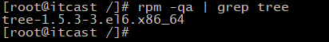
示例2：查询软件包信息
rpm -qi 软件包名称

示例3：显示软件包中的文件列表
rpm -ql 软件包名称

示例4：查看指定文件归属于哪个软件包
rpm -qf 文件绝对路径
3.1.1 rpm包的卸载¶
rpm卸载命令：
| 命令 | 英文 | 含义 |
|---|---|---|
| rpm -e 软件包名称 | erase清除 | 卸载rpm软件包 |
| rpm -e --nodeps 软件包名称 | don't check dependencies | 卸载前跳过依赖检查 |
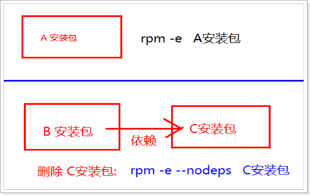
示例：卸载tree
[root@itheima ~]# rpm -qa | grep tree
tree-1.5.3-3.el6.x86_64
[root@itheima ~]# rpm -e --nodeps tree-1.5.3-3.el6.x86_64
[root@itheima ~]#
[root@itheima ~]# tree /home
-bash: /usr/bin/tree: No such file or directory
[root@itheima ~]#
3.1.2 rpm包的安装¶
rpm包安装命令：
| 命令 | 含义 |
|---|---|
| rpm -ivh rpm包名称 | 安装rpm包 |
安装命令参数：
| 参数 | 英文 | 含义 |
|---|---|---|
| -i | install | 安装 |
| -v | verbose | 打印提示信息 |
| -h | hase | 显示安装进度 |
3.2. yum软件包管理器¶
yum（ Yellow dog Updater, Modified）是一个在 Fedora 和 RedHat中的 Shell 前端软件包管理器。基于RPM包管理，能够从指定的服务器自动下载 RPM 包并且安装，可以自动处理依赖性关系，并且一次安装所有依赖的软件包，无须繁琐地一次次下载、安装。
yum 提供了查找、安装、删除某一个、一组甚至全部软件包的命令，而且命令简洁而又好记。
yum 语法：
yum [options] [command] [package ...]
options：可选，选项包括-h（帮助），-y（当安装过程提示选择全部为 "yes"），-q（不显示安装的过程）等等、command：要进行的操作、package：安装的包名。
3.2.1 yum常用命令¶
-
列出所有可更新的软件清单命令：yum check-update
-
更新所有软件命令：yum update
-
仅安装指定的软件命令：yum install
-
仅更新指定的软件命令：yum update
-
列出所有可安裝的软件清单命令：yum list
-
删除软件包命令：yum remove
-
查找软件包命令：yum search
-
列出当前可用仓库信息：yum repolist all
-
清楚仓库缓存信息：yum clean all
3.2.2 yum在线安装软件案例¶

3.2.3 yum在线删除软件案例¶

3.3. Linux安装、卸载MySQL¶
1.卸载系统自带的mariadb-lib¶
查看mariadb版本
rpm -qa | grep mariadb
卸载mariadb
rpm -e mariadb-libs-5.5.56-2.el7.x86_64 --nodeps
删除mariadb默认配置文件
rm -rf /etc/my.cnf
重启机器
reboot
2.在 CentOS 7 上安装 MySQL8.0¶
1 从下面这个网址下载 YUM 仓库的配置软件包。
https://dev.mysql.com/downloads/repo/yum/
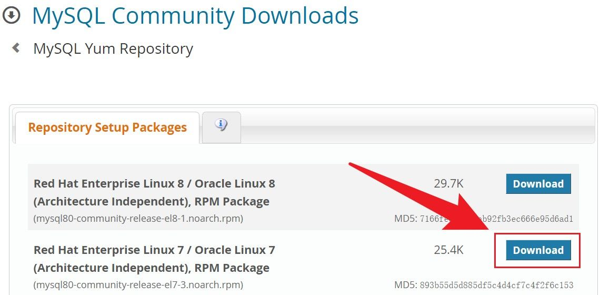
2 将该软件包上传到 Linux 服务器，并安装。
yum install mysql80-community-release-el7-3.noarch.rpm
3 安装 MySQL
yum install mysql-community-server
以上命令除了会安装 mysql-community-server (MySQL server)，还会安装它依赖的其它软件包。
可能会遇到的错误
警告：/var/cache/yum/x86_64/7/mysql80-community/packages/mysql-community-icu-data-files-8.0.29-1.el7.x86_64.rpm: 头V4 RSA/SHA256 Signature, 密钥 ID 3a79bd29: NOKEY
从 file:///etc/pki/rpm-gpg/RPM-GPG-KEY-mysql-2022 检索密钥
获取 GPG 密钥失败：[Errno 14] curl#37 - "Couldn't open file /etc/pki/rpm-gpg/RPM-GPG-KEY-mysql-2022"
解决方案
rpm --import https://repo.mysql.com/RPM-GPG-KEY-mysql-2022
4 初始化数据库
# 删除旧版mysql的数据（注意备份）
rm -rf /var/lib/mysql
mysqld --initialize --console
5 目录授权，否则启动失败
chown mysql:mysql /var/lib/mysql -R
6 启动msyql服务
# MySQL在安装完成后不会自动运行。
systemctl start mysqld
# 将MySQL服务设置为开机启动
systemctl enable mysqld
systemctl daemon-reload
7 查看msyql服务的状态
service mysqld status
8 登陆 MySQL
默认超级用户：'root'@'localhost'
密码获取：grep 'temporary password' /var/log/mysqld.log
登陆方法：mysql -uroot -p
输入临时密码（输入时不会显示出来，输入完直接回车）
9 进入 MySQL 内修改密码
ALTER USER 'root'@'localhost' IDENTIFIED BY '123456';
将上述命令中的 123456 替换为你的新密码。
注意：密码至少要有一个大写字母，一个小写字母，一个数字，一个特殊符号，并且长度至少为八位。
10（可选）安装其它组件
MySQL Connectors 在名为 mysql-connectors-community 的软件仓库里，
MySQL Workbench 在名为 mysql-tools-community 的软件仓库里。
这些仓库默认是启用的，可以直接使用 yum 安装。例如安装 MySQL Workbench：
yum install mysql-workbench-community
11 依次执行下列mysql命令 授权远程连接
查看所有用户是否可以远程连接，依次执行下列命令：
show databases;
use mysql;
select host, user, authentication_string, plugin from user;

host为localhsot，说明用户只能本地连接mysql服务
创建一个root@%账号，使root用户可以远程登录
开启mysql远程访问权限
# 使用数据库
use mysql;
# 创建root@%账号
create user 'root'@'%' identified by 'mysql';
# 配置账号权限
grant all privileges on *.* to 'root'@'%' with grant option;
# 刷新权限
FLUSH PRIVILEGES;
4. 集群服务器搭建¶
4.1. 新增Linux服务器¶
4.1.1 克隆虚拟机¶
学习环境中，一般使用VMware虚拟机克隆Linux系统，用来进行集群服务器的搭建。VMware支持两种类型的克隆： 完整克隆、链接克隆 完整克隆是和原始虚拟机完全独立的一个复制，它不和原始虚拟机共享任何资源。可以脱离原始虚拟机独立使用。 链接克隆需要和原始虚拟机共享同一虚拟磁盘文件，不能脱离原始虚拟机独立运行。但采用共享磁盘文件却大大缩短了创建克隆虚拟机的时间，同时还节省了宝贵的物理磁盘空间。通过链接克隆，可以轻松的为不同的任务创建一个独立的虚拟机。
虚拟机克隆的前置条件：虚拟机处于关闭状态。

虚拟机克隆的流程：
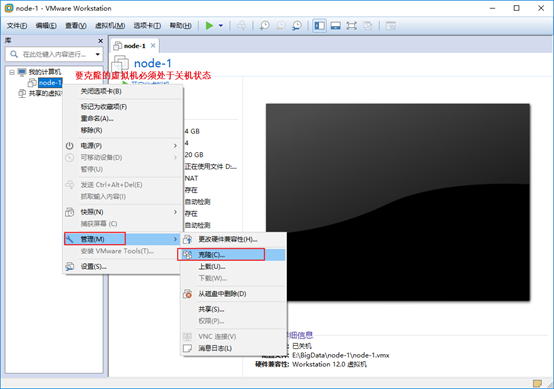
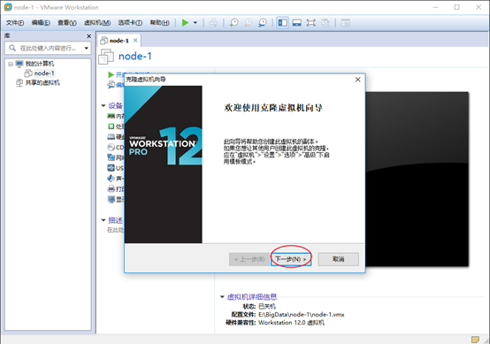


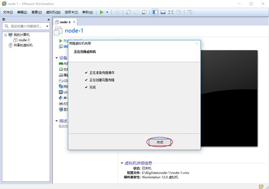
4.1.2 修改虚拟机的硬件配置¶
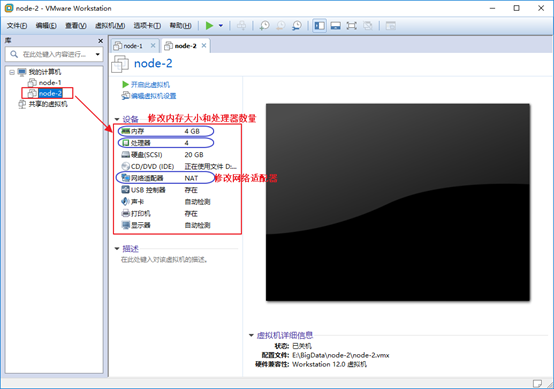
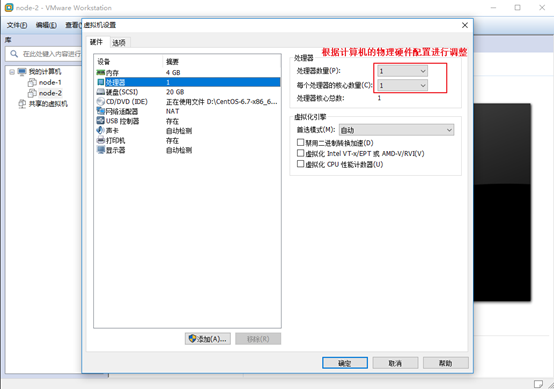
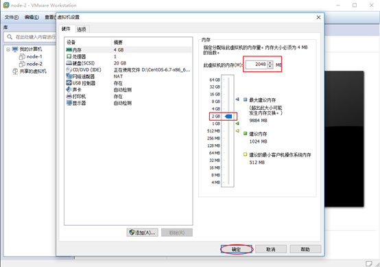
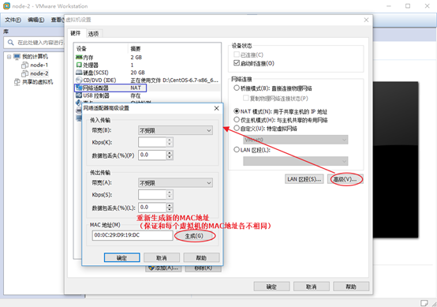
4.1.3 修改虚拟机的网络配置¶
修改主机名hostname:
vim /etc/hostname
node2.itcast.cn
vim /etc/sysconfig/network-scripts/ifcfg-ens33
TYPE="Ethernet" #网卡类型 以太网
PROXY_METHOD="none"
BROWSER_ONLY="no"
BOOTPROTO="static"
DEFROUTE="yes"
IPV4_FAILURE_FATAL="no"
IPV6INIT="yes"
IPV6_AUTOCONF="yes"
IPV6_DEFROUTE="yes"
IPV6_FAILURE_FATAL="no"
IPV6_ADDR_GEN_MODE="stable-privacy"
NAME="ens33" #网卡名称
DEVICE="ens33"
ONBOOT="yes" #是否开机启动网卡服务
IPADDR="192.168.88.162" #IP地址
PREFIX="24" #子网掩码 等价于 NETMASK=255.255.255.0
GATEWAY="192.168.88.2" #默认网关
DNS1="8.8.8.8" #DNS解析(主)
DNS2="114.114.114.114" #DNS解析(备)
IPV6_PRIVACY="no
systemctl restart network # 重启网络服务
4.2. 关闭防火墙¶
4.2.1 关闭firewalld¶
# 查看防火墙状态
systemctl status firewalld
# 关闭防火墙
systemctl stop firewalld
# 关闭防火墙开机自启动
systemctl disable firewalld
# centos服务开启关闭命令
centos6:(某些可以在centos7下使用)
service 服务名 start|stop|status|restart
chkconfig on|off 服务名
centos7:
systemctl start|stop|status|restart 服务名
systemctl disable|enable 服务名 #开机自启动 关闭自启
4.2.2 关闭SElinux¶
安全增强型 Linux（Security-Enhanced Linux）简称 SELinux，它是一个 Linux 内核模块，也是 Linux 的一个安全子系统。
SELinux 主要由美国国家安全局开发。2.6 及以上版本的 Linux 内核都已经集成了 SELinux 模块。
SELinux 主要作用就是最大限度地减小系统中服务进程可访问的资源（最小权限原则）。
临时关闭
# setenforce 0
永久关闭
vim /etc/selinux/config
## This file controls the state of SELinux on the system.
## SELINUX= can take one of these three values:
## enforcing - SELinux security policy is enforced.
## permissive - SELinux prints warnings instead of enforcing.
## disabled - No SELinux policy is loaded.
SELINUX=disabled
4.3. 修改主机名¶
# hostnamectl set-hostname node2.itcast.cn
4.4. 修改hosts映射¶
分别编辑每台虚拟机的hosts文件，在原有内容的基础上，填下以下内容:
注意：不要修改文件原来的内容，三台虚拟机的配置内容都一样。
vim /etc/hosts
127.0.0.1 localhost localhost.localdomain localhost4 localhost4.localdomain4
::1 localhost localhost.localdomain localhost6 localhost6.localdomain6
192.168.88.161 node1.itcast.cn node1
192.168.88.162 node2.itcast.cn node2
192.168.88.163 node3.itcast.cn node3
4.5. SSH免密登录¶
##实现node1----->node2
##step1
在node1生成公钥私钥
ssh-keygen 一路回车，在当前用户的home下生成公钥私钥（隐藏文件）
[root@node1 .ssh]# pwd
/root/.ssh
[root@node1 .ssh]# ll
total 12
-rw------- 1 root root 1675 May 20 11:59 id_rsa
-rw-r--r-- 1 root root 402 May 20 11:59 id_rsa.pub
-rw-r--r-- 1 root root 183 May 20 11:50 known_hosts
##step2
copy公钥给node2
ssh-copy-id node2
注意第一次需要密码
##step3
[root@node1 .ssh]# ssh node2
Last login: Thu May 20 12:03:30 2021 from node1.itcast.cn
[root@node2 ~]# exit
logout
Connection to node2 closed.
##课程要求：至少打通node1---->node2 node3免密登录
4.6. 时钟同步¶


| 命令 | 英文 | 含义 |
|---|---|---|
| ntpdate 互联网时间服务器地址 | Network Time Protocol | 同步时间 |
阿里云时钟同步服务器： ntpdate ntp4.aliyun.com
4.7. 远程文件拷贝¶
远程文件拷贝命令：scp
scp是 remote file copy program的缩写, scp是远程文件拷贝命令
4.7.1 从本机拷贝到远程服务器¶
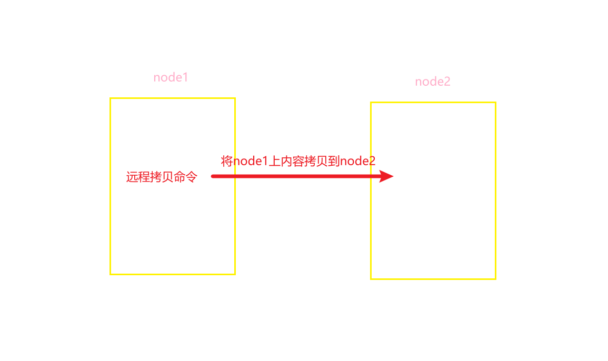
基本语法：
# scp [选项] 本地文件路径 远程服务器的用户名@远程服务器的IP地址:远程文件的存储路径
选项说明：
-r ：递归传输，主要针对文件夹
案例：创建一个linux.txt文件，把linux.txt本地node1服务器上传到node2
# touch linux.txt
# scp linux.txt root@192.168.88.161:/root/
案例：创建shop文件夹及readme.txt文件，然后把shop文件夹连同内部的readme.txt文件一起上传到node2服务器
# mkdir shop
# touch shop/readme.txt
# scp -r shop root@192.168.88.162:/root/
4.7.2 从远程服务器复制到本机¶

基本语法：
# scp [选项] 远程服务器的用户名@远程服务器的IP地址:远程文件的地址 本地文件存储路径
选项说明：
-r ：递归传输，主要针对文件夹
1、文件
案例：把node2服务器端的linux.txt下载到本地
# scp root@node2:/root/linux.txt ./
案例：把node2服务器端的shop文件夹下载到本地
# scp -r root@node2:/root/shop ./
5. Shell编程¶
5.1. 什么是Shell¶
5.1.1 简介¶
Shell 是一个用 C 语言编写的程序， 通过 Shell 用户可以访问操作系统内核服务。
它类似于 DOS 下的 command 和后来的 cmd.exe。 Shell既是一种命令语言，又是一种程序设计语言。
Shell script 是一种为shell编写的脚本程序。 Shell 编程一般指shell ****脚本编程 ，不是指开发shell自身。
5.1.2 Shell解释器¶
Shell编程跟java、php编程一样，只要有一个能编写代码的文本编辑器和一个能解释执行的脚本解释器就可以了。
Linux的Shell解释器种类众多，一个系统可以存在多个 shell，可以通过cat /etc/shells命令查看系统中安装的 shell。

bash 由于易用和免费，在日常工作中被广泛使用。同时， bash 也是大多数Linux 系统默认的 Shell。
总结：java执行需要虚拟机解释器, 同理shell程序执行也需要解析器
5.2. 快速入门¶
5.2.1 编写Shell脚本¶
使用 vi 编辑器新建一个文件hello.sh（扩展名并不影响脚本执行）
#!/bin/bash
echo "Hello World !"
#! 是一个约定的标记，它告诉系统这个脚本需要什么解释器来执行，即使用哪一种 Shell
echo命令 用于向窗口输出文本。

给shell程序赋予执行权限：
chmod +x ./hello.sh #使脚本具有执行权限
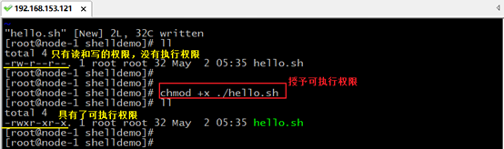
5.2.2 执行Shell脚本¶
执行shell程序：
./hello.sh #执行脚本
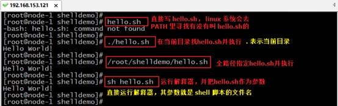
直接写 hello.sh，linux 系统会去 PATH 里寻找有没有叫hello.sh的。
用 ./hello.sh 告诉系统说，就在当前目录找
还可以作为解释器参数运行。 直接运行解释器，其参数就是 shell 脚本的文件名，如：
sh /root/shelldemo/hello.sh
在使用解释器直接执行shell程序这种方式来运行脚本，不需要考虑脚本程序的执行权限了
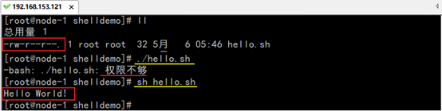
小结：
使用vi编辑器，创建shell程序文件。通常使用.sh作为shell程序后缀名。
shell程序的基本格式：
1、指定解释器信息。 默认：/bin/bash
2、书写shell程序代码
3、保存shell程序代码
4、执行shell程序 提前：给shell程序授予可执行权限
第一种：./xxx.sh #在当前目录中执行shell程序
第二种：/xx/xxx.sh #书写全路径的shell程序
第三种：sh /xx/xxx.sh #把shell程序作用/bin/sh解释器的参数，通过运行解释器来执行shell